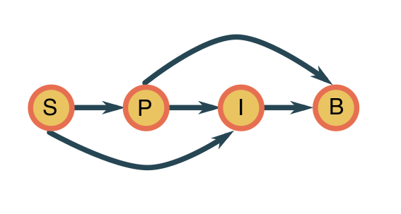

Climbing the ladder of causality
Wearing shorts in November will not induce summer. If this seems obvious to you, congratulations! The neural network within your head can do causal reasoning; something most artificial neural networks are not capable of. A new book by Judea Pearl, ‘The Book of Why: The New Science of Cause and Effect’, has recently sparked an increased interest for causality in the machine learning community. And for good reasons! As a computer scientist, Pearl presents a useful framework for answering questions or ‘queries’ (‘Will this drug have an effect?’, ‘What would have happened if I had…?’). However, as a philosopher, he argues that being capable of pondering about hypothetical situations makes us human. In this post, I will attempt to organize the main ideas of The Book of Why in my personal research sphere.
What machine learning can and cannot do
Most machine learning methods deal with finding patterns or associations in data. Both supervised as well as unsupervised learning methods try to distill ‘rules’ from datasets, for example, to detect animals in photos, cluster documents according to latent topics or predicting biological function of a gene-based on DNA sequence. Although machine learning methods excel in describing the real world, they often lack in understanding the world. This is nicely illustrated by the fragility of deep neural networks. Changing a couple of pixels of an image of a panda can make the neural network confident that the picture is of a vulture. Most deep neural networks seem to have only a shaky grasp on reality, at best.
Consider an example in the research of one of my thesis students at our lab. My student studied bacteria-phage (phages are viruses that infect bacteria and could potentially be used as living antibiotics) interactions for his master thesis. He made a predictive model that, based on the characteristics of a protein of a phage, can predict which bacterial host this phage can infect. And this model works well, it is correct in more than 90% of the cases, using an external dataset. Now, we are collaborating with a synthetic biology group, and they want to make specific artificial proteins to target specific bacteria using synthetic biology. Could they use our predictive model to this end, to guide the design? I am afraid that the answer will likely be no. The properties that the model detects based on the sequence of this protein are not directly linked to the causal mechanism of infection. We found the model searches for biases in the codon use of the protein (how the phage ‘encodes’ the protein in its genes), which is tuned toward its host. To obtain design rules, the model has to take the 3D structure and physicochemical characteristics of the protein into account, a much harder task.
This book struck a nerve with me. In my research, I am developing models for ecological modeling, such as how characteristics of a river impact the diversity of insects. The reason-d’etre is of course that such models can be used to produce guidelines for ecosystem management. One should be very cautious about using a predictive model to guide actions.
The ladder of causality
In this book, Pearl describes the three levels of causal inference, his ladder of causality:
- Association: being able to find phenomena that are related, most animals can do this to some extent, and most machine learning models are trained to learn associations between variables. Example: What is the expected lifespan of somebody who is vegetarian and does not smoke?
- Intervention: being able to guess what the effect will be if one performs an action. Such higher level understanding is typical of more intelligent animals and is more or less the topic of reinforcement learning. Example: How would my expected lifespan change if I become a vegetarian?
- Imagining: being able to reason about hypothetical situations, things that could happen. Imagining is typically done in intellectual activities, such as performing thought experiments, making up a story or inventing a new cooking recipe. Example: Would my grandfather still be alive if he did not smoke?
Pearl explains with great care that these are fundamentally different concepts, which require various mathematical tools. The first level, dealing with associations, is studied using the rules from probability theory and can be learned from data using statistical methods.
The second level deals with interventions. To assess the effect of interventions, one either has to perform a suitable experiment (which might be expensive or even not possible), or one has to be able to reason about the causal structure about the variables of the system. Using only data (usually) won’t get you far answering these types of problems. If you have a database of high school pupils with their curricula and test scores, you could easily see that pupils who follow advanced math courses tend to score better on a standardized mathematics test. Would enlisting all students to such advanced math courses improve their mathematics understanding? Not necessary! It is possible that students enrolled in such classes are naturally more gifted in maths. Adding pupils without a knack for math would in this case not help (or worse, it could demotivate them, resulting in an even worse grade). Moral: the second level requires a more mechanistic understanding of the system.
The final level is even more challenging to model, as it deals with reality as it could be if circumstances were different. By definition, there is no data available, nor could we ever perform experiments, unless someone invents a time machine. The results of queries at this level are called counterfactuals. To make statements about such hypothetical situations, we need an intricate understanding of the system and how all parts are linked together. If we return to the example of mathematics education, I could reason what my math score would be if I had taken the advanced mathematics course. This would not only account for all the things that I would have learned during such a course but also involve backtracking who I might have met there, what influence this could have had on my other activities etc.
A simple ecosystems modeling example
Let us explore these ideas using a hypothetical toy ecosystem. Suppose that we want to model soil, plants, insects, and birds of a type of ecosystem. To keep things simple, these four properties are represented by binary stochastic variables: soil (\(S\)), plants (\(P\)), insects (\(I\)) and birds (\(B\)). This means that there are only two states for every variable. In this case, the soil can be nutrient-poor (\(S=0\)) or rich (\(S=1\)) in nutrients and we model the presence (\(X=1\)) or absence (\(X=0\)) of one species of plants, insects and birds, respectively. We are interested in how the presence of the plant species influences the presence of the insect species.
Collecting data
No model without data! We sample a bunch of sites and record the status of the variables. Such a bunch of observations might look like the table below.
| Soil | Plants | Insects | Birds |
|---|---|---|---|
| 0 | 1 | 1 | 1 |
| 1 | 1 | 0 | 1 |
| .. | |||
| 0 | 0 | 0 | 0 |
In more realistic situations, we might use a much more detailed description of the variables, such as a real value or even a vectorial description of for example which kinds of plants are present in which quantity.
A causal diagram
You cannot do inference without making assumptions. ~ David J.C. MacKay.
The data can only bring us so far. We will assume that the variables follow the causal diagram below.

This means the joint probability distribution factorizes as
\[ \mathbb{P}(S, P, I, B) = \mathbb{P}(S) \mathbb{P}(P\mid S)\mathbb{P}(I\mid S,P)\mathbb{P}(B\mid P,I)\,, \]
meaning that:
- soil is an external variable;
- the plants are dependent on the state of the soil;
- the presence of insects depends on the plants and the soil (for nesting grounds);
- the presence of the bird species depends on both the plants and the insects, which provide nesting grounds and food sources.
How do we know this? Expert knowledge! We presume that a biologist has kindly provided us with this causal diagram, as it is in principle not possible to derive from the data alone. This is because we can, in principle, factorize the distribution \(\mathbb{P}(S, P, I, B)\) any way we like and these would all be equivalent from a statistical point of view. Causal inference (obtaining the causal diagram from data) is a big topic on its own. Here we will mainly be concerned with using the diagram to answer queries.
Level 1: association
Given that I observe a plot with the plant species present, are there likely birds? This question corresponds to the standard conditional probability that \(B=1\) given \(P=1\). This can be stated and computed as
\[ \mathbb{P}( B=1\mid P=1) = \frac{\mathbb{P}( B=1 \cap P=1)}{\mathbb{P}(P=1)}\,. \]
The two quantities in the fraction can readily be estimated from the table of data. Association is (relatively) easy!
Now, if you are protesting that this would not be possible for realistic cases with tens, hundreds, or thousands of variables - you are right. If the number of variables increases, we have to combat the curse of dimensionality using more sophisticated parametric methods: logistic regression, support vector machines, random forests, and the like. Still, the main point remains that we can theoretically answer associated questions purely based on data.
Level 2: intervention
A different question, what happens if we seed some of the plants, forcing \(P=1\). Does this have a large effect on the probability of \(B=1\)? Let us think. Looking at the diagram, adding plants will impact the birds both directly and indirectly through the insects. It will not change the soil composition (as assumed by the model), though the effect of the soil itself indirectly influences \(B\) through \(I\). This question can be denoted as:
\[ \mathbb{P}( B=1\mid \text{do}(P)=1)\,, \]
where \(\text{do}(P)=1\) means that we set \(P\) to \(1\). This query cannot be computed using the standard rules of probability.
In general \(\mathbb{P}( B=1\mid P=1)\neq \mathbb{P}( B=1\mid \text{do}(P)=1)\). We can understand this as follows. Suppose the insects are only there if both the soil is rich and the plant species is present and, likewise, the birds can only be present if both the plants and that insects are present on the site. Adding plants would not make a poor soil rich, so it will not induce insects being present and will not lure any birds whereas the mere presence of plants makes it more likely that both insects and birds are present.
The great triumph of Pearl and his students is that they have found three (only three!) rules which allow the laws of probability theory to work the do-operator. The beauty of their result is that they allow for removing this operator from the query and reformulate it using only standard probability expressions. This means that we can estimate such effects from the data - provided that we have a causal diagram!
Level 3: imagination
Oa mijn tante kluuten, ’t was mijne nonkel. ~ Flemish proverb about hypotheticals.
A specific plot has neither plants nor birds, would there be birds if plants were present? This query is formalized as the counterfactual outcome
\[ \mathbb{P}(B=1 \mid S=s, P=0, I=i, P^\star=1)\,, \]
indicating the probability of having birds if there were plants present (indicated by \(P^\star=1\)).
Again, to compute the above quantity, one needs additional rules to translate the expression in standard probability terms. The crux is to take into account all factors that would have been different, given that there were plants present. If you are lucky, it is possible to obtain an expression for the counterfactual distribution, which can be estimated from data.
Perspectives
When Pearl introduced Bayesian networks, he opened the rigid rule-based artificial intelligence to a more fuzzy, probabilistic reasoning. In his book, he argues that in addition to dealing with uncertainties, machine learning methods should also (implicitly or explicitly) use causal reasoning. Ferenc Huszar’s blog has worked out a small introduction to causal inference and do-calculus in response to Pearl’s book. Check the comments for some references to recent research about deep learning models with a causal twist.
Currently, I am quite interested in kernel mean embedding, a framework that uses kernel functions to represent probability distributions as points in a high-dimensional space. In my experience, kernel methods excel for many biological problems where data is somewhat limited, but there is a lot of expert knowledge to be assimilated (think species interaction networks). Since kernel mean embedding is a flexible tool to think about distributions, there is some exciting work in the direction of causality, such as counterfactual embeddings. Causality seems to be a new research interest of Bernhard Scholkopf, one of the fathers of kernel methods. A new book from his group explores the links between machine learning and causal inference.